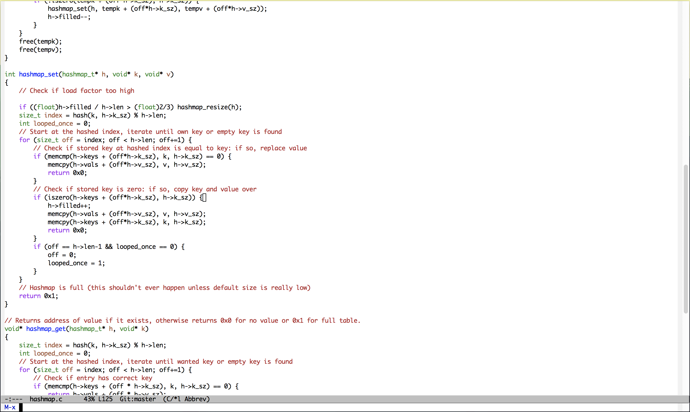
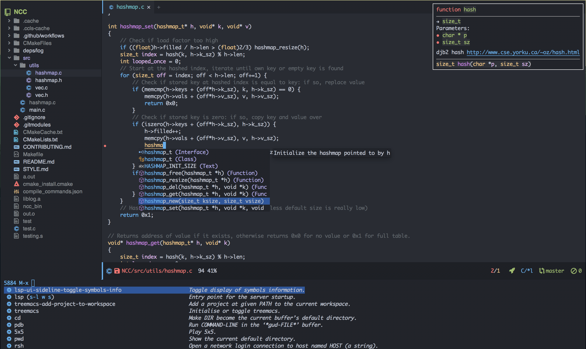

A Quick Emacs Setup
About
In my crusade to convince everyone to use Emacs, I've realized a somewhat (i.e. packages but nothing too specific like keybinds) opinionated guide that allows for a nice setup could be useful. The goal is to quickly get to an editor that looks pretty and can be used comfortably to write code.
|  Before |  After |
This assumes you have a general idea of how to get around in Emacs: if not, see below for a quick refresher.
Basic keybinds
- C-x C-f to open files
- C-x b to switch buffers
- M-x to run a command
- M-x eval-buffer to evaluate a Lisp buffer
- C-x C-e to evaluate Lisp at point
- M-: to evaluate Lisp directly
- C-s to search for a string
- C-x 3 to split horizontally
- C-x 2 to split vertically
- C-x 1 to maximize a split
- C-x 0 to remove a split
- C-x C-c to exit Emacs (the horror!)
Packages
First, let's set the package archives.
(setq package-archives '(("ELPA" . "https://tromey.com/elpa/") ("gnu" . "https://elpa.gnu.org/packages/") ("melpa" . "https://melpa.org/packages/")))
We're going to use use-package for package configuration: it's a macro that'll make things much easier. All that's generally important to understand right now is that code after the :init keyword argument will be evaluated as the package is initialized, code after the :config keyword arg is lazy-loaded, the :bind and :hook keyword Argos are for specifying package-related keybinds and hooks respectively.
Install it via M-x package-install RET use-package. Then, we can set it up.
(eval-when-compile (require 'use-package)) ;; Automatically install all packages if not present. (setq use-package-always-ensure t)
Undoing Defaults
Emacs has some default behaviors that are generally annoying. Let's disable them!
;; Turn off all unnecessary GUI elements. (tool-bar-mode -1) (menu-bar-mode -1) (scroll-bar-mode -1) ;; If you compiled with native compilation, turn off warning popups. (setq warning-suppress-log-types '((comp))) ;; These keybinds suspend Emacs (in order to mimic terminal behavior). ;; This has *only* caused me trouble in GUI Emacs. (if (display-graphic-p) (progn (global-unset-key (kbd "C-z")) (global-unset-key (kbd "C-x C-z")))) ;; Stop Emacs from bothering you about disabled commands. (setq disabled-command-function nil) ;; Prevent any attempts to resize the frame. (setq frame-inhibit-implied-resize t) ;; Stop Emacs from trying to use dialog boxes. (setq use-dialog-box nil) ;; Prefer y/n over yes/no. (fset 'yes-or-no-p 'y-or-n-p)
Doom-Themes
In my opinion, Doom Emacs has the cleanest-looking UI setup for Emacs, so it's up next. Soon, we'll be at a setup that looks much closer to a modern editor by setting up a nice theme that overhauls Emacs' normal look as well as adding plenty of extra improvements: icons, contrast, tabs, and a tree.
Note: you'll need to run (all-the-icons-install-fonts) once in order to have icons work properly.
(use-package doom-themes :init (setq doom-themes-enable-bold t) (setq doom-themes-enable-italic t) ;; Flash modeline on error. (doom-themes-visual-bell-config) (doom-themes-org-config) ;; Set default theme. (load-theme 'doom-one)) ;; Icons! (use-package all-the-icons) (use-package doom-modeline :init (setq doom-modeline-height 40) ;; Don't show text encoding by default. (setq doom-modeline-buffer-encoding nil) (doom-modeline-mode)) ;; Add increased contrast to buffers with code. (use-package solaire-mode :init (solaire-global-mode)) ;; Tabs showing related buffers! (use-package centaur-tabs :init (setq centaur-tabs-height 16) (setq centaur-tabs-style "bar") (setq centaur-tabs-set-icons t) (setq centaur-tabs-icon-scale-factor 0.7) (setq centaur-tabs-set-bar 'left) (setq x-underline-at-descent-line t) (centaur-tabs-mode)) ;; A nice file tree for Emacs. (use-package treemacs :after doom-themes :init (doom-themes-treemacs-config) (setq doom-themes-treemacs-theme "doom-colors") (setq treemacs-width 30)) ;; Icons for Treemacs! (use-package treemacs-all-the-icons :after treemacs :init (treemacs-load-theme "all-the-icons"))
Alternatives to doom-themes
There are general themeing alternatives to doom-themes, namely:
- Nano Emacs, or its precursor Elegant Emacs which is what I used previously
- spacemacs-theme (from Spacemacs)
- Modus Operandi (quite extensive)
Minbuffer completion
Next, let's improve interactions with Emacs: things like finding files, running commands, switching buffers, etc… by using ivy, a light(ish) minibuffer completion system. Ivy is one of the more popular packages for this, meaning that there's quite a bit of integration with other packages. Notably, counsel extends its functionality and swiper provides a nicer interface to interactive search.
On top of this, prescient allows for completions to be even more useful by basing them off of history and sorting them better. Finally, we can add some icons and extra text to make it all prettier.
(use-package prescient :init (setq prescient-persist-mode t)) (use-package ivy :init (use-package counsel :config (counsel-mode 1)) (use-package swiper :defer t) (ivy-mode 1) :bind (("C-s" . swiper-isearch) ("M-x" . counsel-M-x) ("C-x C-f" . counsel-find-file))) (use-package ivy-rich :after ivy :init (ivy-rich-mode)) (use-package all-the-icons-ivy-rich :after ivy-rich counsel :init (all-the-icons-ivy-rich-mode)) (use-package ivy-prescient :after ivy prescient :init (ivy-prescient-mode)) (use-package marginalia :config (marginalia-mode))
Alternatives to Ivy
There's quite a bit of competition here:
- Helm is the next major contender. It's generally heavier and uses a buffer to show completions instead of just the minibuffer. Much like Ivy, it has quite a lot of support from other packages.
- Ido is very minimal and built into Emacs, and by default uses horizontal completion. It's nice but the minimalism comes at the cost of support by other packages and features.
- Selectrum is intended to be an easier and simpler alternative to everything listed thus far, and is a newer addition to the scene.
- Consult also is a newer contender? I don't fully understand it.
LSP
lsp-mode enables us to get Intellisense-esque features in Emacs: setting it up requires both config on Emacs' side and installing actual language servers on your side. Check the lsp-mode page to find the server for your preferred language - although brace yourself for the potential for lots of debugging if the server doesn't work as expected on your system.
It can do more than just provide good completions: you can jump to definitions and references with lsp-find-definition and lsp-find-references respectively, as well as most other things you'd expect from an IDE.
(use-package lsp-mode :init ;; Disable annoying headerline (setq lsp-headerline-breadcrumb-enable nil) ;; Don't show unneeded function info in completions (setq lsp-completion-show-detail nil) ;; Disable annoying autoformatting! (setq-default lsp-enable-indentation nil) (setq-default lsp-enable-on-type-formatting nil) :commands lsp ;; Add languages of your choice! :hook ((c-mode . lsp) (c++-mode . lsp) (python-mode . lsp) (typescript-mode . lsp) (rust-mode . lsp))) (use-package lsp-ui :after lsp :init (setq lsp-ui-doc-delay 5) :hook ((lsp-mode . lsp-ui-mode)))
Company
company-mode provides code completions in Emacs, and will work together with lsp-mode to provide a nice experience. On top of that, let's use add-ons that allow documentation for completions to pop up and also let prescient make things better like it did with Ivy.
(use-package company :init (setq company-idle-delay 0) (setq company-tooltip-maximum-width 40) :hook (prog-mode . company-mode)) (use-package company-quickhelp :after company :init (company-quickhelp-mode)) (use-package company-quickhelp-terminal :after company-quickhelp) (use-package company-prescient :after company prescient :init (setq-default history-length 1000) (setq-default prescient-history-length 1000) :init (company-prescient-mode))
Flycheck
Next, we can add linting to the editor with flycheck!
(use-package flycheck :hook (prog-mode . flycheck-mode) (flycheck-mode . (lambda () (set-window-fringes nil 15 0))))
Want a cosmetic tweak?
Courtesy of @jemoka
Want an alternative look for flycheck? Hate squigglies? Add this under the :config block of the above flycheck block to get a sleeker look for flycheck.
(set-face-attribute 'flycheck-error nil :underline t) (set-face-attribute 'flycheck-warning nil :underline t) (set-face-attribute 'flycheck-info nil :underline t) (define-fringe-bitmap 'my-flycheck-fringe-indicator (vector #b00000000 #b00000000 #b00000000 #b00000000 #b00000000 #b00000000 #b00000000 #b00011100 #b00111110 #b00111110 #b00111110 #b00011100 #b00000000 #b00000000 #b00000000 #b00000000 #b00000000)) (let ((bitmap 'my-flycheck-fringe-indicator)) (flycheck-define-error-level 'error :severity 2 :overlay-category 'flycheck-error-overlay :fringe-bitmap bitmap :error-list-face 'flycheck-error-list-error :fringe-face 'flycheck-fringe-error) (flycheck-define-error-level 'warning :severity 1 :overlay-category 'flycheck-warning-overlay :fringe-bitmap bitmap :error-list-face 'flycheck-error-list-warning :fringe-face 'flycheck-fringe-warning) (flycheck-define-error-level 'info :severity 0 :overlay-category 'flycheck-info-overlay :fringe-bitmap bitmap :error-list-face 'flycheck-error-list-info :fringe-face 'flycheck-fringe-info))
YASnippet
YASnippet is the premiere package for snippets, so let's install it.
(use-package yasnippet :init (yas-global-mode))
To make a snippet for a specific mode, call yas-new-snippet. Refer to the manual after that. Then, to use the snippet, press TAB after typing the key.
Git
Let's install the wonderful git porcelain Magit and some extra usefulness.
;; The ultimate Git porcelain. (use-package magit) ;; Show all TODOs in a git repo (use-package magit-todos) ;; Edit gitignores w/ highlighting (use-package gitignore-mode)
Speedy guide to Magit
Essentially everything you see is interactive: try pressing TAB or RET over it.
- C-x g to open Magit status (where you will do everything)
- Type s over filename to stage it
- Type u over filename to unstage it
- c c to commit
- P u to push to remote
- F-u to pull from remote
- ? to use Magit interactively
Go to Magit's manual for more detail.
Help
In order to make some parts of exploring Emacs slightly nicer, let's install helpful which overhauls the Help interface, and which-key which helps you discover keybinds.
(use-package helpful :init ;; Advise describe-style functions so that Helpful appears no matter what (advice-add 'describe-function :override #'helpful-function) (advice-add 'describe-variable :override #'helpful-variable) (advice-add 'describe-command :override #'helpful-callable) (advice-add 'describe-key :override #'helpful-key) (advice-add 'describe-symbol :override #'helpful-symbol) :config ;; Baseline keybindings, not very opinionated (global-set-key (kbd "C-h f") #'helpful-callable) (global-set-key (kbd "C-h v") #'helpful-variable) (global-set-key (kbd "C-h k") #'helpful-key) (global-set-key (kbd "C-c C-d") #'helpful-at-point) (global-set-key (kbd "C-h F") #'helpful-function) (global-set-key (kbd "C-h C") #'helpful-command) ;; Counsel integration (setq counsel-describe-function-function #'helpful-callable) (setq counsel-describe-variable-function #'helpful-variable)) (use-package which-key :init (which-key-mode))
That's all, folks!
Congrats, you have a base config that looks nice and has a decent set of features now!